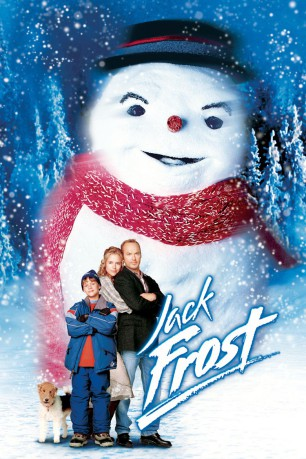

#5091 Jack Frost - Der coolste Dad der Welt!
Alternativ: Jack Frost
 
 IMDB-Wertung: 5.2 / 10
IMDB-Wertung: 5.2 / 10  Metascore: 0
Metascore: 0 
Der Musiker Jack Frost hat es endlich geschafft Der große Erfolg ist in greifbare Nähe gerückt. Doch plötzlich wird Jack klar, daß er dabei das Wichtigste in seinem Leben vergißt seine Frau und seinen kleinen Sohn Charlie. Ein Schicksalsschlag verhindert, daß Jack sich wieder mehr um seine Familie kümmern kann - sein Wagen gerät auf einer eisglatten Bergstraße ins Schleudern ... Doch Charlies Sehnsucht nach seinem Vater bewirkt ein Wunder In einer Winternacht kehrt Jack auf die Erde zurück ... aber er ist ein Schneemann! Bei irrwitzigen Schneeballschlachten und turbulenten Snowboardfahrten kann Jack beweisen, daß er der coolste Dad der Welt ist.
Jahr: 1998
Dauer: 101 Minuten
FSK: 0
Land: USA Studio: Warner Bros.Tonspuren: DD5.1 - ,
Untertitel:
Auflösung: 1080p (1904x792) Größe: 5509 MB
Genre: Drama, Komödie, Fantasy, Familie, Weihnachten
Regisseur: Troy Miller
Drehbuch: Greg Glienna
Soundtrack:
Darsteller:
 Michael Keaton als Jack Frost
Michael Keaton als Jack Frost Kelly Preston als Gabby Frost
Kelly Preston als Gabby Frost Joseph Cross als Charlie Frost
Joseph Cross als Charlie Frost Mark Addy als Mac MacArthur
Mark Addy als Mac MacArthur- Andrew Lawrence als Tuck Gronic
 Eli Marienthal als Spencer
Eli Marienthal als Spencer Will Rothhaar als Dennis
Will Rothhaar als Dennis Mika Boorem als Natalie
Mika Boorem als Natalie- Taylor Handley als Rory Buck
- Joe Rokicki als Mitch
- Ahmet Zappa als Snowplow Driver
 Paul F. Tompkins als Audience Member
Paul F. Tompkins als Audience Member Henry Rollins als Sid Gronic
Henry Rollins als Sid Gronic- Dweezil Zappa als John Kaplan
 Jay Johnston als TV Weatherman
Jay Johnston als TV Weatherman- Jeff Cesario als Radio Announcer
 Googy Gress als Spencer's Dad
Googy Gress als Spencer's Dad- Scott Kraft als Natalie's Dad
 John Ennis als Truck Driver
John Ennis als Truck Driver Wayne Federman als Policeman Dave
Wayne Federman als Policeman Dave- Pat Crawford Brown als Scorekeeper
- Trevor Rabin als Trevor, Lead Guitar
- Lili Haydn als Lili, Violin
- Scott Colomby als Scott, Bass
- Nakia Burrise als Bank customer , uncredited
- Jazzie Mahannah als Featured , uncredited
- Stevie Ray Vaughan als Himself , archive footage, uncredited
- Moon Unit Zappa als School Teacher , uncredited
- Benjamin Brock als Alexander
- Cameron Ferre als Pudge
- Steve Giannelli als Referee
- Scott Thomson als Dennis' Dad
- Jimmy Michaels als Devil's Goalie
- Ajai Sanders als Interviewer
- Golden Henning als Bank Customer
- Mr. Chips als Chester The Dog
- Denise Cheshire als In Suit Performer
- Bruce Lanoil als In Suit Performer
- Louis Molino III als Lou, Drummer
- Mike Butters als Devil's Coach , uncredited
- Rich Knight als Club Goer , uncredited
- Rusty Nelson als School Teacher , uncredited
- Jennifer Robertson als Brooke , uncredited
Datei: X:\1998\Jack Frost - Der coolste Dad der Welt! (1998, FSK0, 1904x792).mkv seit 23.12.2016
Festplatte: HD 1996-2002
 Es gibt insgesamt 86 Filme in der Gruppe '1998'
Es gibt insgesamt 86 Filme in der Gruppe '1998'